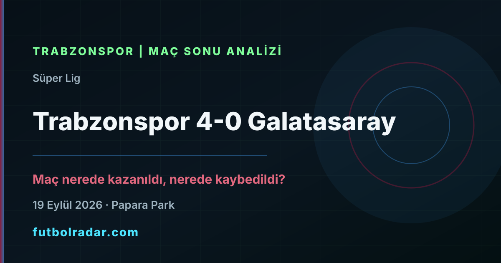

More Than 90 Minutes: What Galatasaray Gets From Its Signings | Trabzonspor 4-0 Galatasaray

Süper Lig | Trabzonspor 4-0 Galatasaray | Papara Park, 19 September 2026
This is an opinion column. It reflects the writer's personal view and should not be confused with FutbolRadar's verified match data.
Trabzonspor beat Galatasaray 4-0 at home at Papara Park on 19 September 2026, in the Süper Lig. The full match report carries the raw numbers; this piece is about what they mean.
A win reads clean on the table. Where it was actually won is usually somewhere the scoreline does not show, so the read below follows the evidence: who held the ball, who created the chances, which minute changed the game, and what the result does to Trabzonspor's league position.
Some matches describe more than ninety minutes; they ask where a team has been heading for months. Seen from the Galatasaray side, this was one of them: 3 new signings on the pitch, a squad that has played 4 competitive matches in 30 days, and the manager's use of that squad open for discussion again. The second half of this piece is given to that argument — and the rule there does not change either: what is measured gets written, what is not does not.
This is not a match summary. Every line below rests on data measured by the provider: the event feed, the team statistics, the team sheets and the per-player output. Nothing unmeasured has been written, and no words have been put in the mouth of a manager or a player. What the Süper Lig fixture left behind is the sum of those measurements.
The goals, in order
4' M. Salah scored for Trabzonspor (assist M. Eskihellac). 39' N. Saviolo scored for Trabzonspor (assist M. Salah). 44' M. Salah scored for Trabzonspor (assist Franculino). 80' M. Salah scored for Trabzonspor (assist O. Tufan).
4 of Trabzonspor's 4 goals came with a recorded assist, which makes them the end of a worked move rather than an individual moment.
The scoreline moved in this order: 4' 1-0 → 39' 2-0 → 44' 3-0 → 80' 4-0. The scoreline turned once, and both sides then played as though they accepted it.
The moment the game turned
4': the goal that put Trabzonspor in front, scored by M. Salah. Until then both sides were carrying the same risk; after it, one team had a scoreline to chase and the other one to protect. Every decision in the rest of the match was made in the shadow of that minute.
The scoring after that minute finished 3-0. Trabzonspor did not merely survive the swing; they turned the space it opened into goals.
Where the game was built
Trabzonspor set up in a 4-2-3-1, Galatasaray in a 4-2-3-1. Possession finished 46% to 54%. Neither side owned the ball, and the match was decided largely by what happened to second balls in midfield. Trabzonspor attempted 371 passes at 81% accuracy, against 81% for the opposition.
Midfield and the defensive balance
Fouls: 15 for Trabzonspor, 18 for the opposition. The yellow cards split 4-1. Trabzonspor's goalkeeper made 2 saves. The goal was rarely tested; the block kept the opposition outside clear shooting range. Of the 3 shots that hit the target, 2 were saved — a 67% save rate. The keeper did his share; the goals came from the quality of the chances rather than from errors behind them.
Penalty-box effectiveness
Trabzonspor's shots split 7–0 inside and outside the box (100% from inside). The attack was built by getting in, not by shooting from range. At the other end the same split reads 8–5 (62% from inside). Trabzonspor blocked 5 shots before they reached the goalkeeper — the measured value of bodies in the box.
The attack and the finishing
Trabzonspor took 7 shots, 4 on target, against 13. 7 of those came from inside the box, so the attack was about getting into the final third rather than shooting from distance. Corners finished 1-5. Expected goals: 2.28 to 0.86. The finishing ran well ahead of the quality of chance created. That is 1.8 shots per goal. Efficient: the chances were good ones, not just plentiful. 100% of the shots came from inside the area, so the attack went looking for the goal rather than settling for range.
The manager's decisions
Starting XI: A. Onana, W. Pina, C. Nwaiwu, S. Savic, M. Eskihellac, M. Kabasakal, Fabinho, M. Salah, E. Muci, N. Saviolo, Franculino. Substitutions: 59' E. Muci; 73' N. Saviolo; 89' S. Savic; 89' M. Salah. The first change came on 59 minutes, once the shape of the second half was clear. The bench contributed in measurable terms: 4 goals and 1 assists came directly from players introduced during the match. These were changes that touched the scoreline, not just the legs. On the other bench, Galatasaray started in a 4-2-3-1 and made 5 changes.
Who stood out
The highest provider ratings among the Trabzonspor side: Mohamed Salah (10 — 3 goals, 1 assists, 7 duels won), Fabinho (7.7 — 8 duels won) and André Onana (7.5 — 2 saves). A rating is not a verdict on its own, but read next to the production above, these are the players who carried the night.
Two halves, or one match
The goals split 3-0 before the break and 1-0 after it. Trabzonspor scored mostly before the break, which turned the second half into an exercise in holding what they had. First goal on 4 minutes, last on 80: the scoreline was written across a 76-minute window.
What the defence gave up
Galatasaray replied with 13 shots, 3 of them on target. 8 of those came from inside the box, which means the defence was opened up in the final third more than once. The opposition's expected goals read 0.86 against 0 actually scored. They fell short of what their chances were worth — part pressure from the defence, part goalkeeping.
What Trabzonspor did well, and where it caught
On the credit side: keeping a clean sheet and converting 2.28 expected goals into 4. None of that is impression — it is measurement, taken from this match, and it marks the part of the process worth carrying into the next one. On the debit side: losing the shot count 7-13 and conceding 8 shots from inside their own box. Any of it can be read as one bad night or as a standing weakness, and the only thing that separates the two is what the same columns say over the coming weeks.
The opposition file: Galatasaray's signings
Galatasaray's confirmed signings this season: Rafael Leão (2026-08-30, Bonservis, from AC Milan; 21 days at the club), Aleksey Batrakov (2026-08-20, Bonservis, from Lokomotiv Moskova; 31 days at the club) and Lesley Ugochukwu (2026-07-15, Kiralık, from Burnley; 67 days at the club). What follows covers those names only, and only what was measured; a transfer linked with the club but never confirmed does not enter this table.
Measured on the pitch in this match: Rafael Leão: 90 minutes, rated 6.7, 6 duels won. Aleksey Batrakov: 22 minutes, rated 6.7, 1 duels won. Lesley Ugochukwu: 19 minutes, rated 5.3, 2 duels won.
### How they looked on arrival, and where they are now
The honest answer today: the measurement that would settle this does not exist yet. In FutbolRadar's player-by-match series, the longest run for a Galatasaray signing is 2 match(es), and comparing a player's first 5 matches with their last 5 needs at least 10 measured matches each. What we hold is not a trend. It is a handful of photographs.
Reading that as "there is no decline" would be as wrong as reading it as "there is one". No verdict runs in either direction on something unmeasured. Whether this club's signings hold their early impact can only be said once each player's production columns have accumulated match by match — and that series fills a little more every week. This section will speak in numbers when it can; today the only honest sentence is this one.
### Fixture load and rotation
Galatasaray came into this match on 3 days' rest, with 3 competitive matches in the last 14 days and 4 in the last 30. Three days or fewer is the window in which naming the same eleven costs the most physically. No rotation figures are given here: only 2 competitive team sheet(s) are on record, and drawing a rotation pattern from that would mislead as badly as counting pre-season friendlies would.
### The real questions
These are questions the measurements open up, not claims, and one match does not answer them: why do players look sharper in their first weeks at a club — an adaptation curve, or a difference in tempo and load? Does naming the same players continuously produce physical and mental wear, and if so, in which week does it show up in the production columns? Is the rotation wide enough to carry a calendar of 4 matches in 30 days? Are the new signings' strengths actually used by the system — is the player adapted to the system, or the system shaped around the player? Do the substitutions arrive before the shape of the game is settled, or after?
All of them sit under one larger question, and that is the one worth arguing about: is Galatasaray good at signing players, or does it struggle to hold on to the performance of the players it signs? And immediately after it: is the problem the players, the congested fixture list, or the way the squad is used? Any answer that reduces those three to one cause would be simpler than football is. The honest route is to accumulate the measurements for all three separately and watch which one actually moves — which is exactly what this piece is doing.
What it means for the league
Trabzonspor sit 4th in the Süper Lig table on 7 points from 4 matches, with 9 scored and 4 conceded. Three points at this stage of the season are less about climbing a row than about keeping the distance to the chasing pack intact.
The last 4 results read W-L-W-D: 2 wins, 1 defeats. An uneven run, and the sign of a team that has not yet settled on an identity.
The honest way to read a match is to put the numbers before the scoreboard. What happened tonight is the sum of the columns above: the chances made, the duels won, the space conceded, the decisions taken. There is something to fix even in a win, and not losing it in the noise of the result is what shapes the rest of a season. FutbolRadar will keep tracking the same columns, on the same scale, after every match.